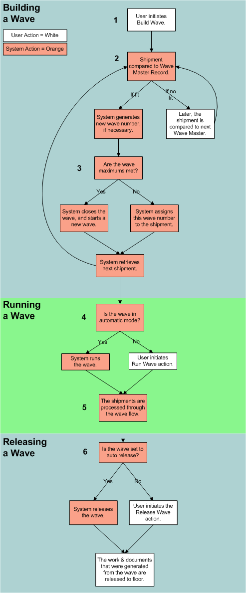
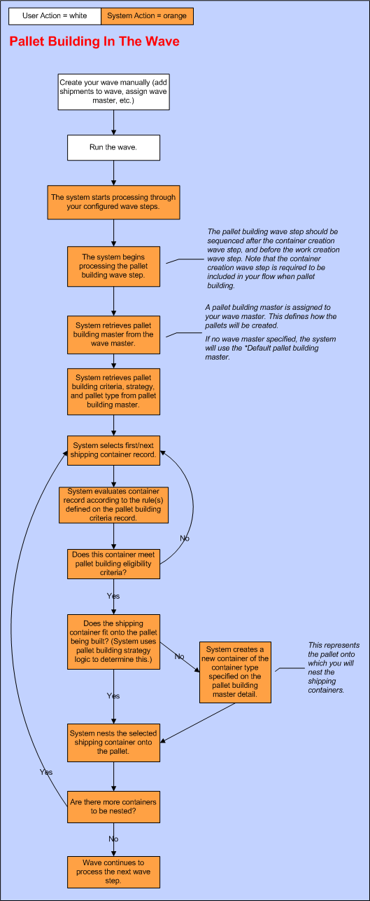
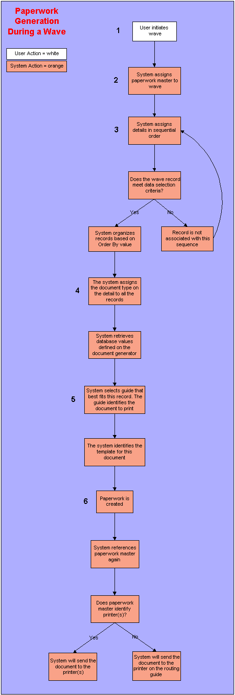
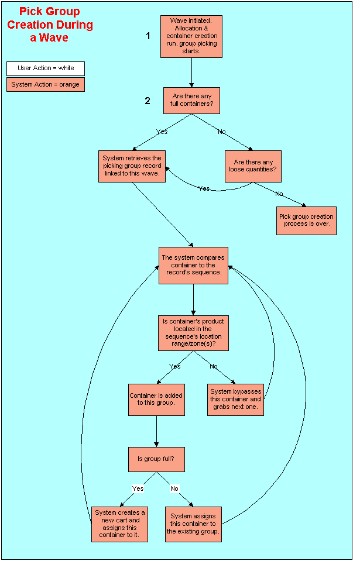

** Process Flows **
The following diagrams are featured in this topic:
- Pick Group Creation in a Wave

The build wave process associates pooled shipments with the appropriate wave master record.
The user accesses the Wave Insight Screen. He/she selects the Build Wave action.
The system organizes both the shipments and the wave master records based on priority number. The authorized wave masters for the selected warehouse are shown.
The shipment priority number is interfaced on the shipment record. The lower the priority number, the sooner the record is compared to the wave master records.
Based on priority, the system selects the first wave master record that it will compare to the pooled shipments.
The system references the wave criteria record associated with this
wave master. The wave criteria record defines which shipments can be processed
using the wave master record.
If the shipment does meet the criteria defined on the wave criteria record, the system will create a wave. This new wave is defined by the wave master record. The system automatically generates a wave number to identify the wave. The shipment is assigned to this wave.
The system checks the wave maximum record associated with the wave master.
If the shipment exceeds the wave maximums, the system will not include it in the wave. It will close the wave and generate a new one. This new wave references the same wave master (as the closed wave). The system assigns the shipment to the new wave. Note that a shipment is never split across waves. If the shipment exceeds the maximums because its details are greater than the wave maximum values, it cannot be supported by the wave master. The shipment will remain in the pool; it will not be included in this wave.
The system retrieves the next shipment, based on priority. It attempts to include it in this wave (which may be a new wave, based on Step A above). If the shipment cannot be included in this wave, the system bypasses it and continues to cycle through the remaining pooled shipments.
The run wave process cycles the shipments through the wave flow's steps. The majority of these steps determine how the shipment will be accommodated in the warehouse. For example, the routing step identifies the carrier that should transport the shipment.
After the wave master has processed through all of the shipments in the pool, the build wave process is finished. This wave can now be run. Other waves may still be proceeding through the build wave process.
The system will reference the wave master record associated with this wave.
If the wave mode is automatic, the system will run the wave. No user intervention is required.
Note that if the wave mode is build inactive, this wave is never considered during the wave building process. The wave is unavailable.
The release wave process releases the work and paperwork created during Step 5.
After the system has cycled the waves through the correct wave flows, the run wave process is finished. The wave can now be released. Other waves may still be proceeding through the run wave process. The wave will move to the Complete status.
The system will reference the wave master record associated with this wave.
If the Auto Release Checkbox is selected, the system will release this wave as soon as the run process is complete. No user intervention is required.


During a wave, the paperwork step generates the documents created during other wave steps, such as work creation and carrier assignment.
Any wave step that may necessitate documents should be run before the paperwork step. For example, work creation may require pick lists. In this case, work creation should be run before the paperwork step.
If a paperwork master is not associated with this record, the system assigns the *Default paperwork master.
Each detail record identifies what criteria a record must meet to initiate paperwork and what document type to produce if the criteria is met. For example, if the criteria is 'Carrier Type = TL' and the document type is BOL, the system will only apply this sequence to wave records for truck load carriers.
The system checks the data selection record defined on the 1st sequence. The data selection record determines which wave records require a certain document type.
Do any wave records meet the criteria defined on the data selection record's criteria?
If yes, the system will organize the eligible records based on the sort criteria defined on the Order By Tab (on the data selection record).
The system assigns the document type linked to the data selection record. The document type identifies if a document is a paper or label document and what data it can display. It is linked to the document template which determines the structure of the document.
The system identifies the document generator value defined on the document type record.
The document generator value determines which database table values the system will retrieve for a document type. These values are used to populate the document template.
The system retrieves the database table values defined for this document generator.
The system retrieves all of the routing guides for the document type associated with this wave record.
It compares each routing guide's criteria to the wave record's values. This criteria determines what document will be printed for the wave record. The guide that best fits the wave record, based on this criteria, is assigned.
The routing guide identifies the document that the system will produce for this wave record.
The system determines which Locating Rule it will apply to the container. It searches for a locating rule in the following order:
The system obtains the appropriate document template from the Printing directory. The Printing directory is shipped with the system and should reside on the server storing the application. Your IS department might have renamed it but it must remain on this server.
The system fills the document template with the appropriate database table values. These values are determined by the document generator record. They were retrieved from the database at Step 4 above.
The system creates the paperwork document. It is submitted to a batch job.
The system routes the documents to the correct printer.
If there is a print break record defined for this paperwork master sequence, the system will check its sequence record. Each print break sequence record identifies how many copies to route to a particular printer. The sequence are assigned in numeric order. If the number of copies generated exceeds the amount that can be assigned to sequence one's printer, the system assigns the maximum number of copies and checks the next sequence. It will assign the remaining copies to the printer defined on this second sequence. The system will process through the sequences until all of the copies have been routed to a printer. If it system applies the last sequence and still has remaining copies, it will assign them to the first sequence.

The pick group creation process organizes containers, created during the container creation wave step, into pick groups.
Full case containers are processed separately from loose containers.
If any full case containers exist, the system retrieves them in order, based on allocation location: the lower the location number, the sooner a container is processed.
The system retrieves the picking group record linked to this wave. The picking group record is defined on the wave master record that governed this wave's activity. The picking group record determines which locations can be serviced by a pick group and how many containers, full or loose, can be in a pick group.
The system compares the first container to the first sequence on the picking group record. Was the container's product allocated from a location in the sequence's location range or zone(s)? For a loose container, were ALL of its contents allocated within the sequence's location range or zone(s)?
If yes, the container is added to this group. Continue to D.
If no, the system bypasses this container and checks the next one against the first sequence on the picking group record. Continue to E.
The system checks the pick group's container maximum. This maximum is set for both full and loose case containers. Does this container exceed the maximum acceptable amount of containers?
If yes, the system will create a new pick group and assign this container to it.
After the system has compared all of the containers to the first sequence in the picking group, it will compare the 'failed' containers to the next sequence. It will continue cycling through all of the sequences in this manner until it can assign all containers to a group. Any containers that cannot be serviced by a sequence are not included in a pick group.